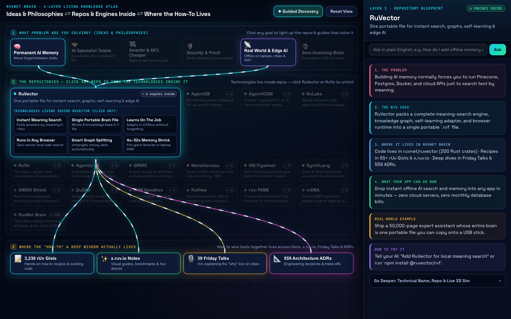

ruvnet brain v5.2.1 · Claude Code + Codex + Antigravity Memory
Your AI stops guessing.
Builds like rUv.
Stretches quota 3×–5×.
Ordinary AI coding assistants don’t know Reuven Cohen’s (rUv’s)
210+ open-source tools — so they guess, invent fake flags, burn your weekly quota on simple chores,
and forget your project tomorrow. RuvNet Brain fixes all four locally on your machine.
It grounds every answer in rUv’s real source code (80/80 plain-English routing),
gives your agents persistent offline memory, stretches AI subscriptions 3×–5×
with smart model routing, and opens a calm visual cockpit (/rvbc in Claude Code,
$rvbc in Codex) — while serving as the free plain-English companion
for Cognitum’s ruPro native desktop workspace.
The whole idea in one sentence: install once — RuvNet Brain turns rUv’s 210+ repos, 3,230+ gists & 39 talks into one offline brain that grounds your AI, saves 3×–5× quota, remembers across sessions, and puts every tool under visual control in /rvbc.
plain-English routing · 95% honest “no” on fake APIszero hallucinations
stop burning weekly Opus/Astra quota on simple file checksmetaharness routing
210+ repos, 3,230+ gist recipes, 39 talks & 559 ADRs offline100% local · zero docker
instant safe save-points for bold AI experiments (AgenticOW)one-click rollback
version 5.2.1 · ruPro newcomer companion & MetaHarness visual dashboard
Plain English in. rUv’s real stack out.
99% of builders have never studied Reuven Cohen’s 210+ repositories — and they
shouldn’t have to. Version 5.2 is the free, open-source 214-store intelligence and
newcomer companion for Cognitum ruPro across Claude Code, OpenAI Codex,
and Google Antigravity: learn 15 core concepts visually with voice briefings, see your live
Before/After MetaHarness routing dashboard, state what you are building in plain English, and graduate
smoothly into ruPro whenever you are ready.
◆ Newcomer companion for Cognitum ruPro — plain-English stack translator
Click a builder goal — see the exact open-source RuvNet layer, verify check & safe undo
Zero-server HNSW vector search on disk
Replaces cloud vector SaaS with a single portable .rvf binary file and sub-millisecond HNSW search right inside your repo — no Docker, no external database, no API bill.
npm install @ruvector/rvf && node -e "import('@ruvector/rvf').then(m => console.log(Object.keys(m)))"
INTERACTIVE 7-STEP STORYBOARD · GUESSWORK → EFFORTLESS
See the whole shift in 30 seconds — click Next or press Space
Walk through the exact transition from ungrounded AI guesswork and quota burn to one offline RuvNet Brain, a calm /rvbc cockpit, and a seamless bridge into Cognitum ruPro.
INTERACTIVE TOUR · ALL 7 PAGES INSIDE THE NEW /rvbc CONSOLE
Say Type /rvbc once — open your entire visual AI cockpitldquo;Run the RuvNet Brain consoleType /rvbc once — open your entire visual AI cockpitrdquo; or type /rvbc
Click any tab below (or step through with Prev / Next) to tour every page of the live local console: the 4-Layer Living Atlas, Ask & Plain-English Stories, Live Health & Switches, 3×–5× MetaHarness Runway, 15 Visual Guides, Cross-Host Memory, and the Visual ruPro Companion.

See Ideas, Repos, Nested Engines & How-To Recipes in one living map
Stop guessing where anything lives across 77 repos. Click any goal on top, expand any repo like RuVector right in place to see the 6 engines living inside it, and trace glowing signal paths straight to the 3,230 rUv Gists, x.ruv.io notes, 39 Friday Talks, and 559 ADRs that teach you how to use it.
- Expandable Repo Blueprints: Click RuVector, Ruflo, or MetaHarness to unfold every capability inside in plain English.
- Guided Discovery Tour: 6-stop “Aha!” walkthrough spotlights offline vector files, 68% AI savings, and camera-free WiFi sensing.
- Ask Anything Bar: Type a plain-English question and watch the Atlas light up the exact tools and recipes.
HOW THE BRAIN RUNS YOUR DAY · AUTOMATIC, BOUNDED & REVERSIBLE
Unearths, turns on, records & remembers — without getting in your way
Most AI plugins are either noisy or invisible. RuvNet Brain runs a quiet, bounded 5-step lifecycle across Claude Code, OpenAI Codex, and Google Antigravity — every action logged, reversible, and under your control.
ruPro mid-project without missing a beat.
210+ REPOSITORIES → 6 PLAIN-ENGLISH SUPERPOWERS
What’s buried in RuvNet’s architecture — made crystal clear
Click any layer in the live pipeline below to see what it actually does, why builders get stuck without it, and how RuvNet Brain wires it for you automatically.
Sub-millisecond vector search in one portable binary file
Instead of spinning up Docker containers or paying monthly bills for Pinecone, RuVector packs SIMD-accelerated HNSW search, quantization, and cryptographic provenance into a single .rvf file right on your disk.
INTERACTIVE METAHARNESS BEFORE & AFTER
Why two-stage routing beats every single-stage router
Toggle between your typical pre-tuning developer week and live MetaHarness routing — watch how shifting routine plumbing off heavy Frontier models triples your runway without touching output quality.
Not just GitHub source — now includes 517 rUv gists,
39 complete Friday Agentics live sessions,
the live x.ruv.io federation gateway, Cognitum SDKs, and rUv’s LinkedIn768d bge-base · zero cloud dependency
Built to make Cognitum ruPro effortless for newcomers:
15 animated visual guides, offline local embeddings, and plain-English blueprints across
RuVector → AgentDB → AIMDS → Ruflo → Agentic QE — every step
paired with a real verify command and safe undofree open-source companion · zero cloud lock-in
First-class continuity across Claude Code, OpenAI Codex, and Google
Antigravity sharing one .swarm/memory.db lifecycle. Type
/rvbc to open the calm, live step-by-step consolelive progress · one-click undo
100% grounded citations (100/100), 100% plain-English routing (80/80 — up from 71.25%), 95% off-topic abstention (19/20), and 0/120 timeoutsmeasured on frozen graders · never inflated
On an old version? One line makes you current.
# one line: update now, stay current forever
npx ruvnet-brain@latest --update --autoRun it once — it auto-updates from then on. Then type
/rvbc (Codex: $rvbc) to open your visual
cockpit and explore the new 4-Layer Living Atlas, 15 Visual Guides,
MetaHarness 3×–5× Runway, and ruPro Companion.
Prefer a one-time update without auto-enroll?
npx ruvnet-brain@latest --update
Live v5.2.1 measured scoreboard — every number run against the frozen repository graders
| Metric | Measured | What it proves (and what we’re pushing next) |
|---|---|---|
Source-grounded citations (eval-brain) |
100/100 (100%) | Every positive answer cites a verified passage from rUv’s real source — zero hallucinated citations, zero infra errors |
Capability confidence (brain-capability-check) |
9/9 (100%) | 7/7 positive tool-capability queries + 2/2 honest negative controls |
Off-topic abstention (eval-brain) |
19/20 (95%) | Up from 85% after stripping benchmark telemetry dumps from identifier scans — knows when to say “not in the Brain” |
| Card routability across the ecosystem | 209/210 (99.5%) | 214 total 768d RVF stores on disk including 39 Friday Agentics live sessions, 517 gists, x.ruv.io & Cognitum SDKs |
Plain-English routing (eval-brain) |
80/80 (100.0%) | Up +28.7 pts from 57/80 (71.25%): 32/32 described, 20/20 scenario, 28/28 named, 0/120 timeouts via owner-scoped concepts CARD co-routing & enriched newcomer capability cards |
| Automated test & wiring integrity | 303/303 · 58/58 | 303 unit tests, 58 live JSON-RPC plugin tests, 521 wired modules (0 unwired / 0 inert), 18/18 single-source checks |
Earlier — what 4.0 shipped: the honesty update (from lessons to evidence)
one instruction — “prove it works before calling it done” — taught 88 separate times, in 19 projects that cannot see each other. The Brain mined 736 lessons across 41 stores and surfaced every repeated rule with evidence736 lessons · 41 stores
rules that could interrupt were obeyed 8/8 times; the prose rule that could only be read was obeyed 0/6knowledge that cannot interrupt does not act
the Brain held every fact needed to say “your learning system is installed, and it is switched off” for three weeks before 4.0 forced latency-to-surface to zerolatency-to-surface
26 learning hooks registered, none enabled — 4.0 replaced assumption with live on-machine verificationchecked live, not recalled
Earlier — what 3.5 shipped: it stopped waiting to be asked
it scans what’s actually on your machine and says the sentence nobody knew to ask for — on the author’s own machine, unprompted: “36 project stores are embedded but have never been distilled — 6,858 memories sitting in those stores, teaching nothing”observed, never a hardcoded feature list
nothing can be offered that can’t be run and undone — each proposal carries evidence it observed, a cost, plain English about what it touches, and a tested inverse, enforced by a factory that throws rather than a review that can be skippedADR-027 · proven on a real 1,250-entry store
two diagrams had shipped with labels rendering at 8px and 3px — present but invisible. A gate now measures effective pixel size in the live page, so it can’t happen againlegibility, enforced
Evergreen auto-update — run one command once and the Brain updates itself from then on, verifying each bundle’s signature before applyingrun once, stay current
Measured, never projected. Every number above comes directly from frozen repository
graders and live local telemetry: cross-host AgentDB checkpoints, bounded lifecycle hooks, signed
auto-updates, live 2-stage MetaHarness routing, and 80/80 (100.0%) plain-English routing on the frozen
120-question eval-brain suite (0/120 timeouts).
01
The moment it goes wrong
What actually happens without the Brain?

Meet Maya — a capable developer, brand-new to rUv’s tools. She opens Claude Code and asks the obvious thing: “Set up vector search for this project using RuVector.”
Without the Brain
Claude has never been trained on RuVector. So it does what classical training taught it — it reaches for Pinecone, or pgvector, or hand-rolls cosine similarity in JSON. It even gently argues with her: “a managed vector DB would be more standard.” Maya, nervous and new, assumes Claude knows best. She ends up far from rUv’s actual stack — slower, heavier, wrong.
With the Brain
Claude reads rUv’s real RuVector source first, sees RVF binary vector files + HNSW, and writes
the correct RvfDatabase.open(...).query(...) code — the way rUv would.
No argument. No drift. Maya ships the front-edge version on her first try.
Technical view — the same question, two paths
02
Why Claude drifts: the 9-month gap
Why doesn’t Claude already know this?
your assistant’s blind spot
Claude is trained on the public history of software — millions of classical-dev examples. rUv works ~9 months ahead of that frontier.
His tools are the prototypes of what becomes mainstream AI tooling — much of it lands in Claude Code 8–9 months later. So when you ask Claude to use today’s front-edge rUv tool, you’re asking about its own future — and it defaults to the past it was trained on. It doubts. It substitutes. It “falls asleep at the switch.”
This is not Claude being dumb. It’s a training-horizon problem. The newcomer gets the worst of both worlds: a revolutionary toolset with no manual, and an assistant that argues against it.
Technical view — the timeline, and the gap
03
How it steps in like Ruv — automatic, never asleep
Do I have to remember to use it?
fires on prompts AND code edits
You never have to remember to use it — it’s automatic. You don’t call anything. You don’t remember anything. Once installed, the Brain works on every prompt in every repo.
It grabs the wheel at two moments — intent and action:
- At intent — the grounding hook. It fires on every prompt and tells
Claude “ground in rUv’s real source before you assert anything.” Even when you never say
the word “RuvNet,” it speaks up the moment you reach for a classical default —
pinecone,pgvector,langchain— and points Claude at rUv’s way instead. - At action — the nudge. When Claude reaches for a training-prior default
like
import pineconeornpm i langchain, the Brain injects the sharper rUv replacement (RuVector, Ruflo…) into the turn and points it at the real source to confirm — so the answer is grounded, not guessed. It’s a strong grounding nudge, not a hard block: it steers Claude back onto the stack rather than silently rewriting your code.
Behind both, a search_ruvnet tool pulls the exact source passage on demand
— so the correction always comes with rUv’s real code attached, not a guess. You just
talk to Claude like normal; the Brain makes it behave like it finally read rUv’s whole
library.
Technical view — the grounding loop
search_ruvnet pulls the real passage → grounded, cited answer → back to you. Fires on every rUv-stack turn; retrieve-and-inject grounding, not a hard lock (ADR-0005).
04
What’s actually in the Brain
What did you gather, exactly?
214 live stores · rUv's real source, indexed
210+ of rUv’s repos, rUv's real source, indexed, in a real vector brain (RVF). Not docs — the source.
Coverage map — everything gathered in one brain
search_ruvnet tool.Plus human-written primers and the capability cards that make routing work. Everything is read once, up front, so Claude can be pointed straight at the exact line of code instead of skimming and giving up.
05
The ecosystem
What can I actually build with?
You never choose between these and you never read their docs — Claude reaches for the right one automatically. Here’s the whole toolkit, in plain terms, grouped five ways. Open any one for the human version and the one thing it does that nobody else does yet.
Orchestration — running the agents
1 The conductor that runs a swarm of agents ruflo
Coordinates swarms of parallel agents that share state and memory — spawning them, routing and orchestrating multi-step tasks, and adding hooks and MCP tools. The conductor of the whole stack, with 60+ specialized agents and a hierarchical topology backed by Raft consensus. Ahead: a built-in self-learning layer with HNSW-indexed pattern storage reported at 150×–12,500× speedup and sub-10 ms ONNX embeddings — so the swarm gets measurably better the more it runs.
2 54+ ready-made coding agents that swarm in Claude Code agentic-flow
A roster of 54+ specialized agents — coder, reviewer, architect, PR-manager — that work together right inside Claude Code across three swarm topologies (mesh, hierarchical, ring), routed over Anthropic, OpenRouter and Gemini to manage cost. Ahead: each agent’s confidence evolves 0.6 → 0.95 via meta-learning with persistent ReasoningBank memory, and the hierarchical topology reported a 100% success rate.
3 Idea → shipped code, in disciplined gated steps sparc
Build properly instead of “vibe it”: Specification → Pseudocode → Architecture →
Refinement → Completion, with a quality gate between every phase and a CLI driving the AI analysis,
planning and execution. Ahead: a --research-only pass runs before you
write a line, with human-in-the-loop (--hil) approval at each gate.
4 An agent that rewrites itself to improve safla
A self-improvement architecture that monitors, evaluates and edits its own behavior across three layers — operational, meta-cognitive and self-modification — with episodic, semantic and vector memory. Ahead: continuous self-evaluation with divergence and novelty detection plus automated error-recovery workflows, so it adapts its own strategy and policy at runtime.
Vectors + memory — what the agents know
5 A vector database that’s just one file ruvector
A high-performance Rust vector database: SIMD-optimized HNSW indexing in a single .rvf binary file,
with WASM bindings for in-browser search — a zero-server replacement for Pinecone, Qdrant or pgvector.
Ahead: sub-100 µs HNSW search at ~16.4K QPS, packaged as a
cryptographically-signed RVF container with witness chains for offline-capable deployments. This Brain runs
on it.
6 A cache that gets faster the more you use it rulake
A self-optimizing read and working-memory layer that sits in front of your index, giving agents a remember / recall / forget surface with sub-millisecond RaBitQ recall. Ahead: cryptographic witness-chain provenance (SHAKE-256) with automatic bundle-rotation refresh and an auto-tuning hit ratio — deterministic, verifiable retrieval that improves with usage.
7 Memory that can explain why it remembered agentdb
Durable agent memory that survives sessions — a SQLite + vector hybrid that also stores n-ary hyperedge graph relationships between memories. Ahead: a causal memory graph with explainable, feature-attribution recall (it answers “why did I recall that?”), benchmarked 150× faster than brute-force search.
8 Git for agent memory agenticow
Copy-on-write vector branching: branch, checkpoint, roll back, promote and trace agent memory like code, so parallel agents share one base while keeping isolated edits. Ahead: forks a store in constant time and size — ~0.5 ms and ~162 bytes per branch regardless of base, proven 83× faster and ~3000× smaller than copying 1,000,000 vectors — plus GDPR right-to-erasure by dropping a branch.
Agents + tooling — building & running them well
9 A factory that builds & evolves agent harnesses agent-harness-generator
Scaffolds a complete, host-agnostic agent harness (Claude Code, Codex, pi.dev and other MCP hosts) with a single command, then scores the repo for fit and the harness for readiness, safety and SBOM. Ahead: Darwin Mode evolutionarily improves the harness itself — A/B-tested and mutated under immutable safety rails — instead of fine-tuning the model.
10 Prompts that program themselves dspy.ts
A TypeScript implementation of DSPy: build LLM pipelines from composable modules and typed signatures (classification, sentiment, QA, ReAct) and let optimizers auto-tune the prompts and few-shot examples against a metric. Ahead: runs fully in-browser on ONNX Runtime Web, with hierarchical (working / short / long) vector memory on AgentDB.
11 Keeps tool calls fast and crash-proof fact
Wraps LLM tool calls with aggressive caching plus a circuit-breaker and graceful degradation, so tools stay fast and don’t cascade-fail. Ahead: a three-tier cache reporting 85%+ hit rate at sub-50 ms, with production alert rules and a LiteLLM multi-provider gateway.
12 Agents that manage their own budget daa
A Rust framework for decentralized autonomous agents that govern themselves with auditable rules (MaxDailySpending, RiskThreshold), run token economies and accounting, and integrate AI decisions over MCP. Ahead: rule-enforced governance combined with post-quantum (ML-DSA / ML-KEM-768) transaction signing and self-running MRAP autonomy loops.
Safety + security — trust, measured
13 Agent messaging a quantum computer can’t crack qudag
A quantum-resistant, DAG-based platform for end-to-end encrypted, anonymous agent-to-agent messaging over peer-to-peer QUIC, with resource metering. Ahead: NIST post-quantum crypto (ML-KEM-768 + ML-DSA) on a DAG with QR-Avalanche consensus and anonymous multi-hop routing that resists traffic analysis.
14 Scores how well an AI fixes real CVEs cve-bench
A SWE-bench-style benchmark that measures whether an agent can actually fix real, publicly disclosed CVEs by passing each project’s own FAIL_TO_PASS security regression test. Ahead: a conformance firewall ensures the model never sees the gold fix, scored on a cost-aware resolves-per-dollar leaderboard.
Specialized — the wild edge
15 Sense people through walls with plain WiFi ruview
Camera-free WiFi sensing: turns ordinary WiFi Channel State Information (CSI) into presence, occupancy, 17-keypoint pose, and fall / gesture recognition — privacy-preserving, no cameras (needs ESP32-S3/C6). Ahead: reads medical-grade vitals — breathing and heart rate — from radio alone, with sleep-apnea screening and a mass-casualty assessment mode, and it fails closed rather than fabricating a reading.
16 Search images by describing what you want rupixel
Zero-server, client-side visual retrieval: searches document screenshots and live video frames by semantic meaning using on-device CLIP embeddings — OCR-free, nothing uploaded. Ahead: real-time CLIP ViT-B/32 search running entirely in the browser at ~50–200 ms per keyframe, with keyframe de-duplication.
17 Neural nets in Rust, run in the browser ruv-fann
A fast, memory-safe FANN-style neural network library in Rust — MLPs and cascade-correlation networks
that grow dynamically — that compiles to WASM for browser and edge, with time-series forecasting.
Ahead: zero unsafe code, plus a CUDA-WASM bridge for GPU-accelerated
inference in portable targets.
18 Cut LLM token cost with a drop-in proxy synthlang
LLM middleware with an OpenAI-compatible proxy that compresses prompts and cuts token cost (~75% reduction), plus semantic caching and PII masking — no app rewrite — and a CLI for mathematical / symbolic prompt transforms. Ahead: symbolic compression reported at ~75% fewer tokens while raising task accuracy to 97% vs an 85% baseline, applied at the proxy.
06
Beyond answering — it runs the tools too
It doesn’t just know rUv’s tools. It operates two of them for you.
MetaHarness · QE — one line each
Grounding makes Claude answer like rUv. But two of rUv’s most powerful tools are pre-wired to run — you ask in a plain sentence and the Brain operates them for you. No mastery required.
The other functionality — wired in, one line each
You never have to master MetaHarness or the QE fleet to use them — that’s the point. Stage 1 (Developer Seats) works with your existing Claude, Codex, and Antigravity subscriptions (zero API key required) to stretch your weekly quota 3×–5× while keeping 93–97% warm prompt cache. Stage 2 (Production Apps & Evolve Loops) connects to an OpenRouter or multi-model API cascade to cut per-task API spend 60–80%. Same one brain, same one-line habit — now it doesn’t just tell you the rUv way, it operates it.
07
Stretch your tokens — without losing the smarts
Everyone knows rUv makes AI cost a fraction. Here’s exactly how.
cheap model does the work · smart one only when needed
This is the part people can’t figure out. They know rUv runs the same work for a fraction of the cost — they just can’t see how. MetaHarness splits routing into two clean stages: in Stage 1 (your developer subscriptions), it keeps Claude Code, Codex, and Antigravity warm on Balanced and escalates only hard work to Frontier (stretching your seat 3×–5× with zero API key). In Stage 2 (your production apps & API workloads), a cheap model handles the bulk first and the expensive one is called in only when the quality gate escalates — cutting API spend 60–80% automatically via OpenRouter or your own providers.
The money-saver, drawn out
Two honest notes so this isn’t hype: the ~56× is rUv’s measured SWE-bench coding result (a great case for it); on everyday work you’ll typically see 30–50% savings. And you keep the capability because the cheap models are genuinely strong now — the expensive model is still there the instant a task actually needs it.
08
See it work
Show me, don’t tell me.
Same question, asked two ways. Left: Claude alone (drifts). Right: Claude + Brain (grounded in rUv’s source). Watch the difference.
No backend, no API key. The only difference is the brain in context: it called search_ruvnet, pulled the real passage, and answered from rUv’s own source — not its training prior.
09
How you actually use it
It’s installed — now what do I do?
one line · open /rvbc · automatic
Using it takes 30 seconds.
# one command — downloads the Brain + wires Claude Code & OpenAI Codex
npx ruvnet-brain
# or, for the bleeding-edge commit: npx github:stuinfla/ruvnet-brainIt downloads the Brain to
~/.cache/ruvnet-brain/kb, auto-wires Claude Code and OpenAI Codex
at user scope (with explicit /hooks review), and shares one zero-server local AgentDB project
memory with Google Antigravity (AGY_SESSION) and Cognitum ruPro.
No Docker and no server.
Already installed? Upgrade & open your new visual cockpit
# 1. Update to v5.2.1 now and stay current automatically
npx ruvnet-brain@latest --update --auto
# 2. Then type /rvbc in Claude Code (or $rvbc in Codex) to see everything new!First time upgrading to v5.2? Run
/rvbc (Codex: $rvbc) right after updating to
explore the brand-new 4-Layer Living Atlas, Ask & Stories,
15 Visual Guides, live MetaHarness 3×–5× Runway, and
ruPro Visual Flow.
Prefer a one-time update without auto-update?
npx ruvnet-brain@latest --update.
Your first 60 seconds: open the visual cockpit
Type /rvbc in Claude Code (or $rvbc in Codex) — opens your local RuvNet Brain Console with the Living Atlas, 15 Visual Guides, MetaHarness dashboard, ruPro Companion & one-click undo.
Read-only until you click; nothing leaves your machine.
And it gets smarter about how you work
Every session teaches it your patterns — how you like to ship, test, verify. Those learnings are shared across all your projects and compound over time; your project facts stay isolated per project, never cross-pollinated. Do a workflow twice and it becomes a reusable best practice that shows up everywhere — a pattern library, not rebuilding every house from scratch. Each person’s Brain learns them. That’s intelligence that isn’t capped: it grows through use.
- Install or upgrade in one line. Run
npx ruvnet-brain(ornpx ruvnet-brain@latest --update --autoif upgrading). Watch it download and wire itself up cleanly. - Open your visual cockpit first. Type
/rvbcin Claude Code (or$rvbcin Codex) to tour the 4-Layer Living Atlas, 15 Visual Guides, MetaHarness 3×–5× Runway, and ruPro Companion. - Just ask, normally. “Use RuVector for search.” “Set this up the way rUv would.” The Brain grounds your assistant automatically in rUv’s real source instead of guessing.
The nervous questions, answered directly
npx ruvnet-brain --doctor. It distinguishes active, pending review,
intentionally disabled and broken states instead of calling a partial install complete.
ruPro. Install one,
two, or all three; each is a first-class host over the same user-level local Brain and shared AgentDB
memory. Pure browser chat surfaces cannot reach local files, so use a local coding-agent surface.
npx github:stuinfla/ruvnet-brain --doctor anytime to see what’s present.
10
How it works across your world
How does it act — across my repos, and without getting in the way?
recommends only when it fits · then guides you in
Install once and the Brain travels with you — every repo, every window. In each project it reads what you’re actually building first, then acts the way rUv would: it recommends a rUv tool only when it genuinely fits this project — and when it does, it guides you through wiring it in. When it doesn’t fit, it stays quiet. Never forced.
The process — across your user, across your repos
# what shipped — portable, user-scoped ~/.cache/ruvnet-brain/kb/ # the Brain (RVF) — travels with you, not the repo ├ capability-cards.md # route by need, not by name ├ concepts/ # plain-English primers per building block ├ *.rvf # rUv's real source, indexed · HNSW vector index └ forge-mcp-all.mjs # the search_ruvnet tool — one tool, all repos claude-code-plugin/ # the grounding hook — fires on every prompt